主体音乐形象
团子是用户在音乐 App 虚拟空间中的基础形象，可以从圆滚滚团子扩展到动物型、精灵型、漂浮型等形态。
互联网产品方案报告 · 四段式汇报版
情绪团子是音乐 App 内的情绪陪伴型宠物。它把用户当下的一级情绪、二级动作状态、听歌场景、推荐内容和轻量互动连接起来，让用户在听歌时获得更明确的陪伴感。
Tab 1 · 产品描述
产品主语言来自《产品方案.docx》：用户先认领基础团子，再设置一级情绪和可选的二级动作状态。一级情绪表达“我现在是什么感觉”，二级动作状态表达“我现在正在做什么，想以什么样子待在这个情绪里”。结合 MuChator 论文语境，情绪团子承接的是情境化、口语化、主动表达的音乐发现需求。
情绪团子是音乐 App 内的情绪陪伴型宠物。用户选择或创建自己的团子形象，并为团子设置“一级情绪 + 二级动作状态”。团子出现在播放页或音乐空间中，随音乐节奏、歌词氛围和情绪转折做出反应，并影响推荐歌单的内容方向。
例如用户选择“放松 + 正在旅行”，团子可以呈现旅行家皮肤，背着包、拿着地图，在海边或城市背景中移动；推荐歌单也会更偏旅行、民谣、Chill 或轻松氛围。
团子是用户在音乐 App 虚拟空间中的基础形象，可以从圆滚滚团子扩展到动物型、精灵型、漂浮型等形态。
一级情绪决定团子的颜色、光效、表情和整体氛围，也决定推荐的大方向。
动作状态决定皮肤套装、道具、动作和场景背景，也会影响更细的推荐标签。
新版产品方案将团子状态拆成两层：一级情绪回答“我现在是什么感觉”，二级动作状态回答“我现在正在做什么，想以什么样子待在这个情绪里”。情绪保持克制，场景、曲风、语言和活动沉淀为动作状态或推荐标签。
Tab 2 · 竞品分析
根据《三种app中陪伴小宠形象调研.docx》的文字描述，三组样本分别代表三种方向：汽水音乐把小宠物接到 AI 音乐发现入口，QQ 音乐把 AI 陪伴做成可选人物、动作和背景玩法，网易云音乐把播放页宠物与自定义生成结合。
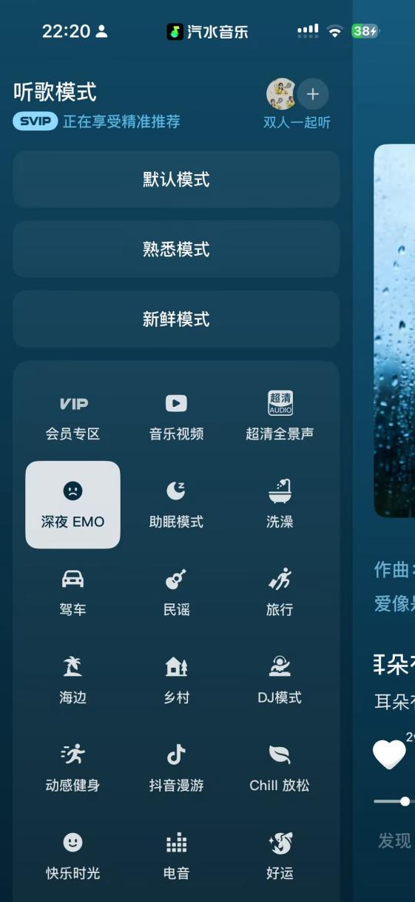
多场景模式选择说明用户愿意用场景表达听歌需求；情绪团子可进一步把入口收敛为“先选情绪，再选状态”。
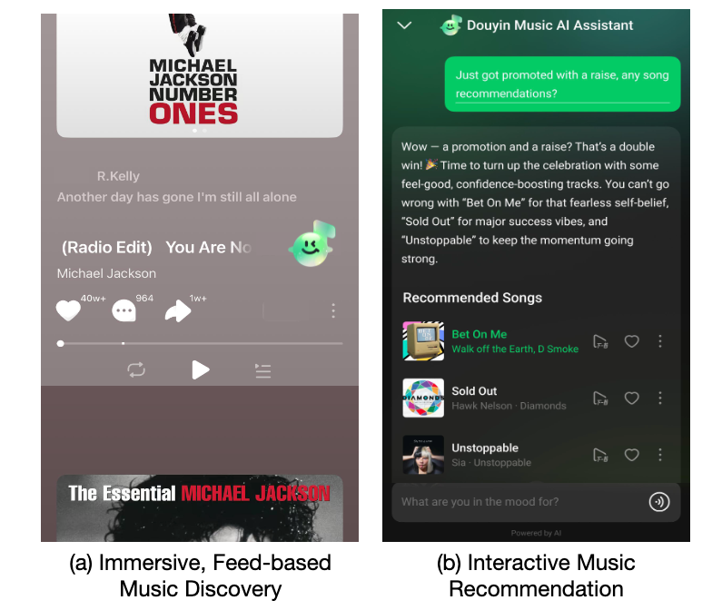
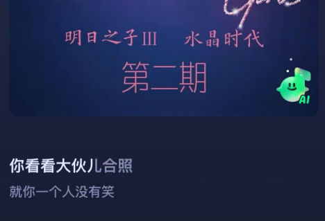
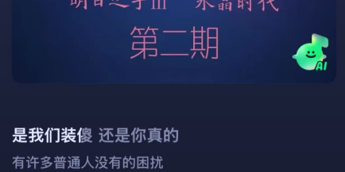
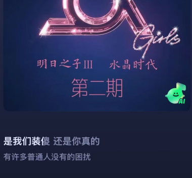
从被动推荐流到交互式音乐推荐，再到小宠物承载 AI 文案与 Assistance 入口，证明主动找歌可以被前台角色承接。
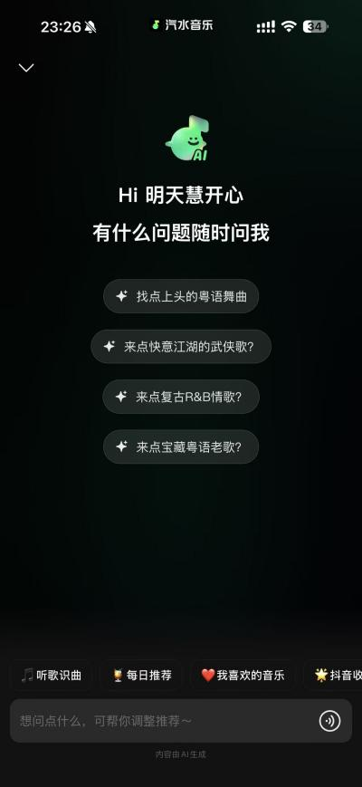
小宠物跳转 AI 音乐发现，但角色本身互动较弱；情绪团子要把入口、反馈和陪伴动作合在同一角色中。
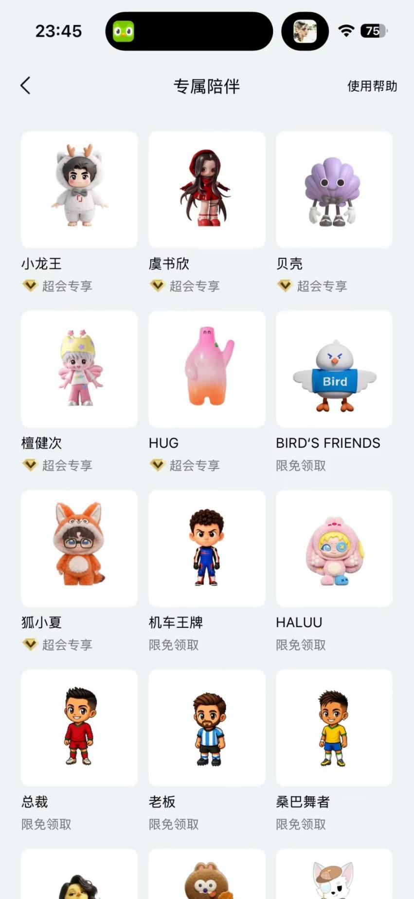
AI 陪伴人物选择证明形象资产已经进入音乐产品，情绪团子可进一步让形象绑定情绪和推荐方向。
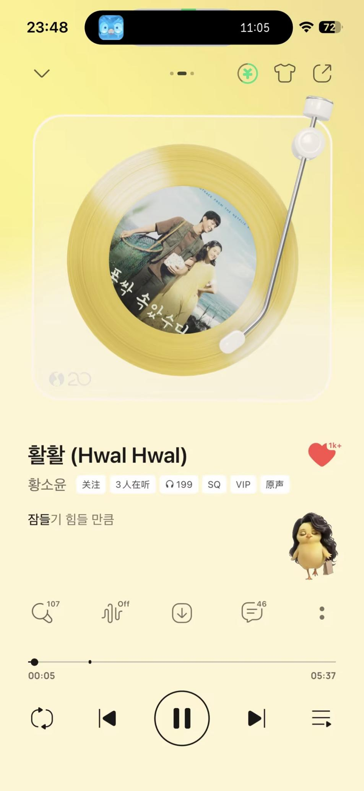
播放页形象验证“陪伴在场”，但固定位、不可玩、不可移动；情绪团子需要成为可操作的浮动对象。
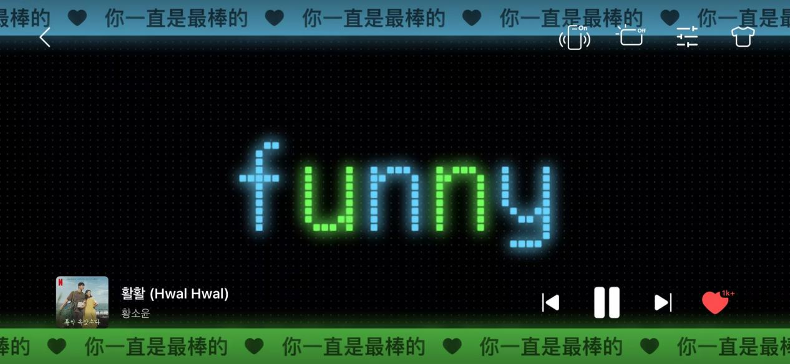
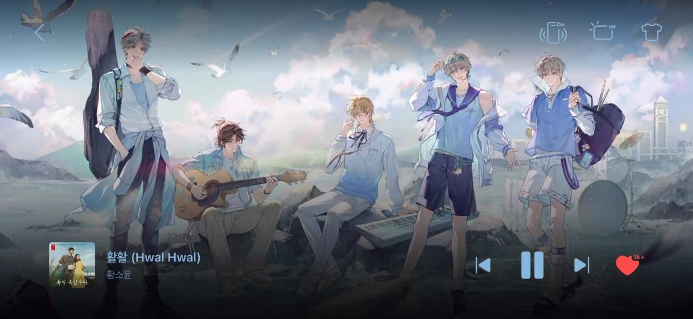
背景玩法说明视觉资产可与播放氛围绑定，歌词背景和主题视觉可转化为团子的状态皮肤和场景套装。
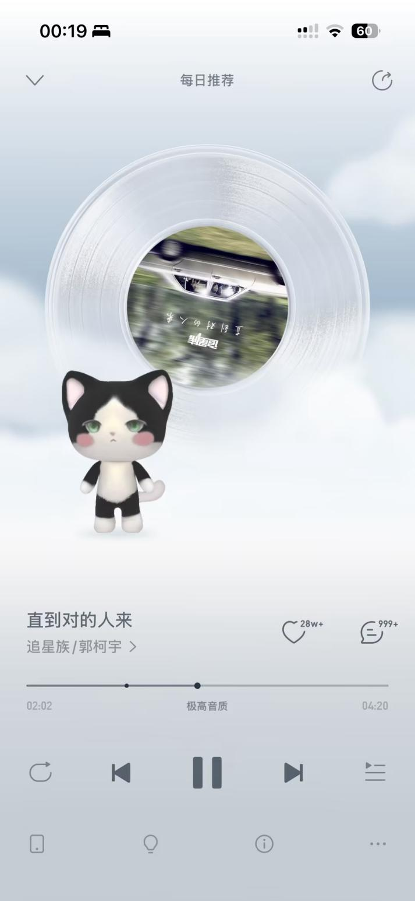
播放页宠物强化“音乐状态可被看见”，但动作较固定；情绪团子要跟随节奏、情绪和用户反馈变化。
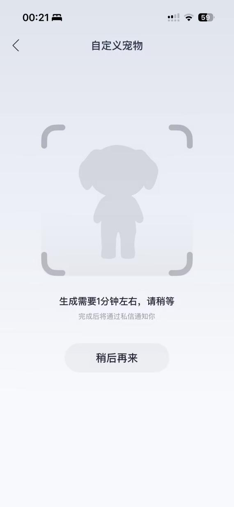
自定义生成强调个性化身份，情绪团子可以把生成结果接入听歌行为、状态皮肤和情绪推荐。
| 产品 | 重点能力 | 情绪团子的机会 |
|---|---|---|
| 汽水音乐 | 多场景模式选择、浮动小宠物、Assistance 入口、沉浸式推荐流、交互式音乐推荐。 | 保留主动找歌能力，同时让团子不仅是入口，还能表达情绪、解释推荐和承接反馈。 |
| QQ 音乐 | AI 陪伴人物选择、人物动作、音乐固定位、背景玩法、会员和装扮资产。 | 吸收人物、动作、背景资产能力，同时解决固定、不可玩、不可移动的问题。 |
| 网易云音乐 | 播放页宠物、自定义生成宠物形象、音乐情绪社区、音乐人格和状态表达。 | 把“生成一个宠物”升级为“宠物随听歌状态持续变化”。 |
| 其他参考 | 全民 K 歌可作为娱乐化角色动作参考；Spotify/Deezer 强调 mood 推荐和推荐解释。 | 简单借鉴，不作为本方案主竞品。重点仍回到中文音乐产品的播放、推荐、会员和社交场景。 |
Tab 3 · 游戏拓展
小游戏采用“轻放置 + 微节奏收集 + 情绪陪伴”的形式：用户不用一直盯着屏幕玩，听歌本身会自动掉落资源；用户想互动时，可以点一点、接一接、抱一抱小宠物，帮它把情绪能量攒起来。这样不会打断音乐 App 的主体验，而是让播放过程多一层陪伴反馈。
产品游戏拓展可以定义为“情绪能量补给站”。用户选择情绪后，小宠物进入对应状态；播放歌曲时，系统根据播放时长、节奏和当前情绪持续积累情绪能量。以 EMO 状态为例，小宠物缩在雨夜角落里，歌曲播放时掉落“歌词碎片”“雨滴音符”“共鸣光点”，用户可以帮它收集这些光点，为它加油。能量满后，小宠物不会立刻“变开心”，而是从“低电量 EMO”变成“被陪伴的 EMO”。重点不是消灭负面情绪，而是承认情绪，陪它待一会儿。
| 情绪 | 小游戏主题 | 场景关键词 | 掉落物 |
|---|---|---|---|
| EMO | 雨夜补给站 | 雨夜、月亮、小夜灯、慢速呼吸 | 雨滴音符、歌词碎片、共鸣光点 |
| 放松 | 海边漂流 | 海浪、泡泡、躺平漂流 | 泡泡、贝壳、月光 |
| 元气 | 节拍充电站 | 充电台、星星、跳跃节拍 | 星星、能量球、火花 |
| 专注 | 书桌整理 | 书桌、时钟、灵感点 | 书页、时钟碎片、灵感点 |
后续所有情绪可以复用同一套底层机制：播放触发、掉落物、能量条和宠物反馈。差异主要体现在场景主题、掉落物和奖励表达。
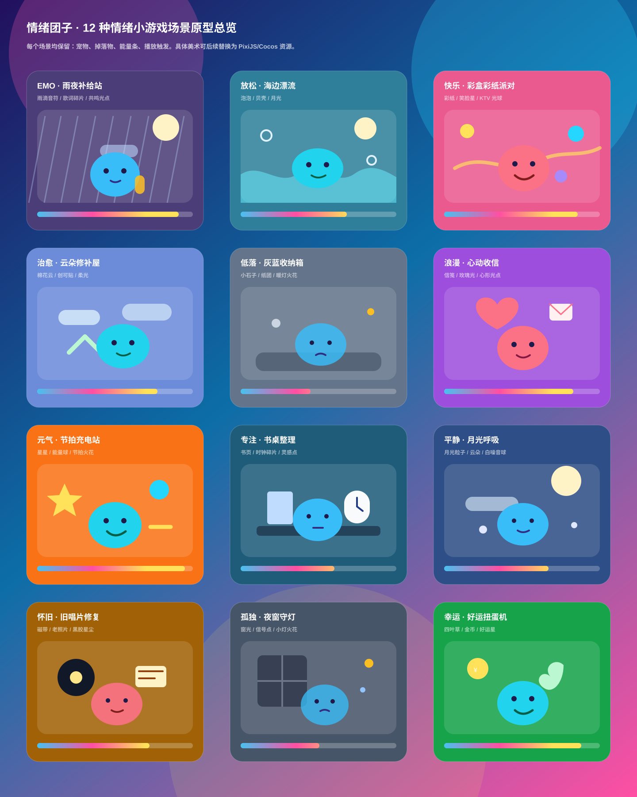
Tab 4 · MVP
MVP 以现有 FloatingBeatMascot 为基础，完成播放页浮动团子、节奏动效、一级情绪选择、二级动作状态、情绪推荐位和推荐解释，让用户直接感知“情绪定基调，动作状态定场景”。
页面中出现一个浮动情绪团子。播放歌曲后，团子跟随节奏上下弹动、倾斜、发光；用户点击团子可切换基础形象和一级情绪；点击“正在旅行”可叠加二级动作状态皮肤。
降低节奏强度，减少强鼓点，保留温柔人声。
Tab 5 · 商业闭环
收益逻辑来自《收益闭环.docx》：情绪团子不是趣味贴片，而是把听歌、推荐、会员、社交和轻量游戏奖励包装成一个更有情绪感和可消费空间的虚拟形象系统。
| 阶段 | 产品动作 | 业务目标 | 观察指标 |
|---|---|---|---|
| MVP | 基础团子、播放页动效、一级情绪、二级动作状态、情绪推荐位、推荐解释。 | 证明陪伴感和两层状态入口能提升听歌消费。 | 推荐点击率、播放页停留、情绪切换率、分享率。 |
| V1 | 轻量成长、听歌反馈记忆、更多二级动作状态和状态皮肤套装。 | 提高留存和用户对团子的拥有感。 | 7 日留存、30 日留存、连续使用率、收藏与完播提升。 |
| V2 | 会员状态套装、场景套装、歌手联名、主题活动。 | 形成会员权益和虚拟资产收入。 | 会员转化、道具购买、活动转化、联名曝光。 |